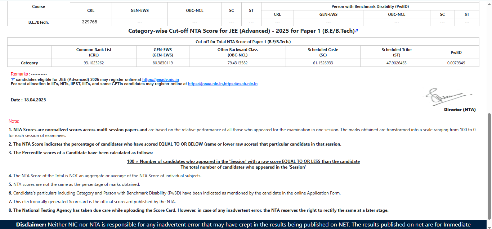

.result-container { text-align: center; padding: 20px; } .result-img { width: 100%; max-width: 850px; margin-bottom: 30px; box-shadow: 0 0 12px rgba(0, 0, 0, 0.3); }
JEE (Main) – 2025
NTA SCORE - Paper 1 (B.E./ B.Tech.)
üéâ Result Generated Successfully
üñ®Ô∏è Print
❌ Close
